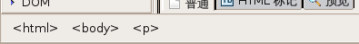

| 显示/隐藏 | KompoZer 帮助中心 |
译者：TeliuTe 来源：基础教程网
KompoZer 是一个开源的所见即所得(WYSIWYG)完整网页创建系统。它是基于 Gecko，Mozilla 渲染引擎。KompoZer 完全是免费的，您可以从 KompoZer 网站 下载。
本教程是为初学者设计，为那些刚开始使用所见即所得编辑器的使用者，它提供了足够多的帮助让您学习使用 KompoZer 设计网页。它不是 HTML、XHTML、CSS 等代码的教程，它只是帮助您学会如何使用 KompoZer。
是的，本手册甚至没有讲到 HTML 所有基础语法的细节，它是一个简单的教程，一些不重要的细节被舍弃，我们鼓励您自己找到它们。教程还涉及到了如何使用内置的 CSS 编辑器(CaScadeS)。
若是您很想细致学习 HTML、CSS，可以访问 W3C 网站，那儿您可以找到许多相关介绍，您也可以通过搜索或是找一本可用的书籍来学习 HTML。
这个教程首先会介绍 KompoZer 的用户界面，这在下面的基本格式章节中介绍，然后是如何插入各种元素，例如图片、表格、表单等。接下来我们有一个小的章节教您使用 CSS 格式化您的文档，这篇文章还包括如何将文档发布到网站上去。
[ 返回到开头 ]
KompoZer 的文件菜单包括全部的操作功能，详细介绍请参阅 菜单索引 页面。KompoZer 的工具栏包括:
常用工具栏中包含最常用的操作功能，下面的图片展示了默认的常用工具栏，每个按钮下方有文字说明。
格式工具栏在 KompoZer 编辑网页时非常有用，在格式工具栏中，您可以设置图片格式、选择字体、更改背景或背景色，增大或减小字号，强调一个块或文本，您也可以创建有序或无序列 表，让文字或块左对齐、右对齐或居中，要想知道各个按钮的作用，只要把鼠标移到上面，就会有一个浮动提示。
KompoZer 允许您同时编辑多个文档，每个文档对应打开一个标签，使用标签比单独打开各个窗口更方便，桌面看着也不乱，如果一个文件修改了还未保存，在标签上会显示一个“红色小磁盘”标记，提示您文件还未保存。
编辑模式工具栏指示当前文档编辑的查看模式，可用的模式有普通模式、HTML 标记、HTML 源代码和预览模式，您可以通过鼠标点击，在它们之间很方便地切换。
KompoZer 的状态栏显示光标所在位置的 HTML 标记等级，您可以很方便地通过点击右键来编辑/关联常用标记的属性，单击左键选择此标记包含的文本。

[ 返回到开头 ]
您可以通过点击常用工具栏上的“新建”按钮，创建一个新页面，或者点菜单“文件 > 新建”，然后选择“空白文档”，再点“创建”按钮。 如果您用的是 文件 > 打开命令，那么将会编辑打开的文件。更多详细介绍，请访问 KompoZer 帮助文档的 开始一个新页面 章节。
您还可以使用一个模板代替普通 html 文件来开始一个新页面。模板让网站管理变得简单，只需要编辑不同的地方而不必担心设计，这些都由模板来控制。更多模板相关的信息，可以在 KompoZer 帮助文档的 使用模板工作 章节获得。
[ 返回到开头 ]
我们要在下一章里使用文本，以便学习 KompoZer 基本的格式功能，复制下面的文本，然后粘贴到您新建的文档中。
科比特国家公园
科比特国家公园，为纪念吉姆·科比特而命名，创建于1938年，是亚洲的第一个国家公园，它位于印度北方邦。它的面积有512平方公里， 科比特国家公园，Sonandi 野生动物保护区，森林保护区组合起来超过1288平方公里 ，组成一个叫做科比特老虎保护区的项目。
科比特国家公园中最著名的动物是孟加拉虎和亚洲象，它也是其他野生动物的家园，位于 Garhwal 和 Kumaon 山区域的交界处， 它也融合了各个地区人们的文化。
吉姆·科比特
吉姆·科比特(1825-19)，居住在 Kaladhungi。他的房子已经由政府改建为一个博物馆，作为他生活的纪念。他是一个自然保护者和摄影师，出生于1875年7月25日，他在 Kaladhungi 和 Nanital 长大，在为英国参加完一次大战后，他回到印度和他姐姐 Maggie 定居在 Kaladhungi，他多次应政府和村民请求，对付吃人虎和豹子。
访问科比特国家公园
基本信息
海拔: 385-1100 米
全年降雨量: 1400 - 2800 毫米
气温: 冬季 4℃ 到夏季 42℃。
旅游开放时间从11月15日到6月15日。
到达路线:
科比特老虎保护区总部在 Ramnagar，通过公路连接到 Delhi, Moradabad, Bareilly 和 Nanital。 国家运输公共汽车提供从 Delhi, Moradabad 和 Haldwani 到 Ramnagar。通过铁路的游客可以从 New Delhi 乘铁路到达 Ramnagar。
首先我们来处理标题和副标题，选中顶部的文本"科比特国家公园"，然后点击 格式工具栏 中的 正文 下拉列表，选择 段落标题 1。文本将成为默认的一级标题样式，同样地，选中文本“访问科比特国家公园”，设置为二级标题。
第二步，您可能想对文本分段，把它们标记为 段落，步骤跟设置标题相同。在给出的文本中，这些已经完成以便使文本更容易阅读，但标记段落是一个很好的练习。
您还可以对重要的字或词使用 粗体(B), 斜体(I), 或者是 下划线(U)，它们都是位于 格式工具栏 上的按钮，排列在一起。在格式工具栏或格式菜单里， 还有一些其他选项用来设置文本格式，您可以进一步使用这些选项，您将会学会其中的技巧。 如果您弄错了，也不必担心，只要按一下组合键“Ctrl+Z”，就可以 撤销 您最后一次操作，更多格式相关的细节，请参阅 KompoZer 帮助文档里的： 格式化您的网页 章节。
这时候，您的教程文本应该显示像这样:
科比特国家公园，为纪念吉姆·科比特而命名，创建于1938年，是亚洲的第一个国家公园，它位于印度北方邦。它的面积有512平方公里， 科比特国家公园，Sonandi 野生动物保护区，森林保护区组合起来超过1288平方公里 ，组成一个叫做科比特老虎保护区的项目。
科比特国家公园中最著名的动物是孟加拉虎和亚洲象，它也是其他野生动物的家园，位于 Garhwal 和 Kumaon 山区域的交界处， 它也融合了各个地区人们的文化。
吉姆·科比特(1825-19)，居住在 Kaladhungi。他的房子已经由政府改建为一个博物馆，作为他生活的纪念。他是一个自然保护者和摄影师，出生于1875年7月25日，他在 Kaladhungi 和 Nanital 长大，在为英国参加完一次大战后，他回到印度和他姐姐 Maggie 定居在 Kaladhungi，他多次应政府和村民请求，对付吃人虎和豹子。
基本信息
海拔: 385-1100 米
全年降雨量: 1400 - 2800 毫米
气温: 冬季 4℃ 到夏季 42℃。
旅游开放时间从11月15日到6月15日。
到达路线:
科比特老虎保护区总部在 Ramnagar，通过公路连接到 Delhi, Moradabad, Bareilly 和 Nanital。国家运输公共汽车提供从 Delhi, Moradabad 和 Haldwani 到 Ramnagar。通过铁路的游客可以从 New Delhi 乘铁路到达 Ramnagar。
[ 返回到开头 ]
图片、表格和表单可以插入/创建到您的文档里，可以使用 常用工具栏。
让我们插入一个表格，然后复制科比特国家公园基本信息到里面。
在常用工具栏上点击“表格”按钮 ，
然后移动鼠标选5行2列。在第五行第二列点击，会创建默认大小的表格。
，
然后移动鼠标选5行2列。在第五行第二列点击，会创建默认大小的表格。
要向表格中填充前面输入的文本，只要使用剪切(Ctrl+X)和粘贴(Ctrl+V)对应的文本即可，操作完成后，表格应该是像下面这样:
| 海拔 | 385-1100 米 |
| 全年降雨量 | 1400 - 2800 毫米 |
| 气温 | 冬季 4℃ 到夏季 42℃ |
| 旅游开放时间 | 从11月15日到6月15日15 |
| 到达路线 | 科比特老虎保护区总部在 Ramnagar，通过公路连接到 Delhi, Moradabad, Bareilly 和 Nanital。国家运输公共汽车提供从 Delhi, Moradabad 和 Haldwani 到 Ramnagar。通过铁路的游客可以从 New Delhi 乘铁路到达 Ramnagar。 |
对于表格的基本结构，您可以通过选定表格然后更改表格属性，例如，把光标放到 表格里，然后点 常用工具栏 上的 “表格”按钮。 在表格属性对话框里，您可以为表格、单元格、行或列设置属性，例如，设置表格或单元格背景色， 表格的标题，表格对齐方式，表格或列宽，等等。
详细的表格属性设置，请访问 KompoZer 帮助文档的 添加表格到网页 章节。
[ Return to beginning of section ]
KompoZer 允许用户通过一个叫“CaScadeS”的内置样式表编辑器，来创建和编辑样式表 CaScadeS 既可以使用内部样式表也可以使用外部样式表，关于 CaScadeS 如何使用的详细 介绍已经超出了本教程的范围，当然，用户可以在主帮助文档的 使用样式表 章节获得指导。
[ 返回到开头 ]
您可以通过 KompoZer 内置的站点管理器来发布您的文档，通过按 F9 键显示站点管理器。
站点管理器组件被重新编写，因此这部分教程暂未书写，需要等到新版本的发布。
[ 返回到开头 ]
© 2003-2009 Nvu, KompoZer 帮助文档项目贡献者，版权所有。